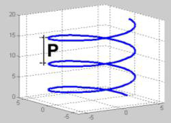
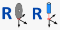
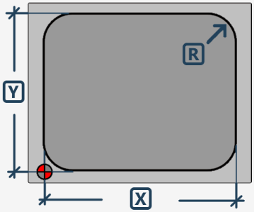

The excavation page allows to perform a rectangular excavation with fillets and flat bottom.
For this working it is necessary to use a suitable milling cutter, to mount on the main spindle.
As level for the bottom is considered the 'bench level'.
The cycle involves step mode with helical entry at center and working distance settable from parameters.

Parameters
 | X |
 | Y |
 | Radius R |
Depth of the pocket | |
 | Z Step |
 | Working distance |
 | Depth increase in way in  |
 | Working Speed |
 | Drop speed |
 | Zero setting Axes X and Y  The position is taken by positioning the milling center in the indicated point. |
Execution working
Insert the X, Y, and R measures that characterize the shape of the rectangular cavity that you want to obtain.
Check the correctness of the data relating to the tool, in particular the diameter.
The following two execution modes are available
Mode to reach excavation until bench quote
To execute correctly a digging, is necessary position the center of the machine in the point of origin of the digging, as showed in the figure present in the previous chapter. This assures that the entire process develops correctly with respect to the designated area.
Subsequently, you proceed with setting the characteristic measures of the shape of the excavation to be made.
Before starting the processing, it is fundamental to verify the exactness of the selected tool data, with particular attention to the diameter, as it directly influences the precision and the quality of the excavation.
The acquisition of 'bench quote' must be performed referring to the level of the bottom of the excavation. To determine it correctly, position yourself on the upper edge of the material and zero the Z quote. From there, perform a downward movement equal to the desired depth of the excavation. At this point, you can acquire the bench quote via the appropriate button. In the presence of milling type tools, it is recommended to perform this operation with axis A positioned at 90_, so as to avoid inaccuracies due to the actual length of the tool.
Once the bench quote is defined, proceed with zeroing the X and Y axes. This is done by pressing the relative reset button, positioning the center of the cutter exactly at the point indicated in the figure using the reference symbol. In machines equipped with a laser pointer, it is possible to acquire the zero point in X and Y using directly the reference provided by the laser.
The depth of the excavation depends directly on the level set as bench quote and the position of the Z axis at the time of cycle start, through the 'Start cycle' button. Working happens through a spiral entrance to the center, up to the depth specified in the 'Z Step' parameter. Subsequently, the area is emptied with a concentric movement, following the distance set in the working parameters.
The machine’s displacements needed to reach the initial position occur at the so-called 'clearance height', which can be defined in the tool parameters. This ensures that the tool does not interfere with any obstacles during the positioning movements.
Positioning mode above the piece and origin value reset
This mode involves the setting and subsequent use of the parameter: 'Depth of the digging'